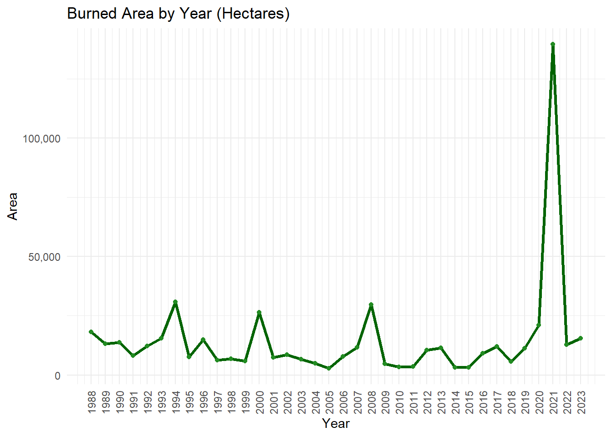
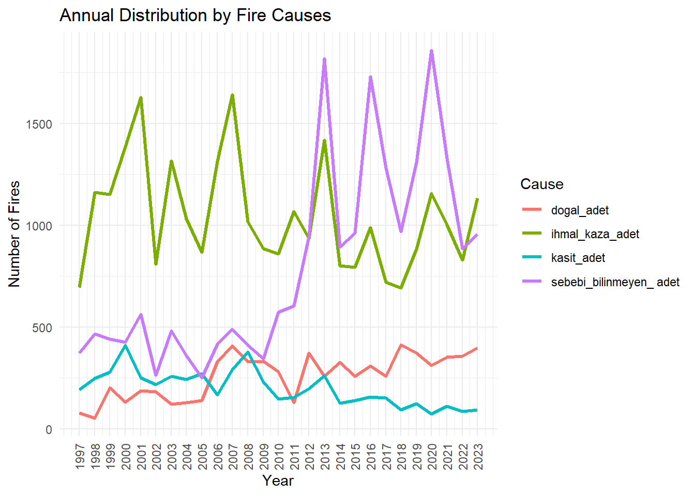
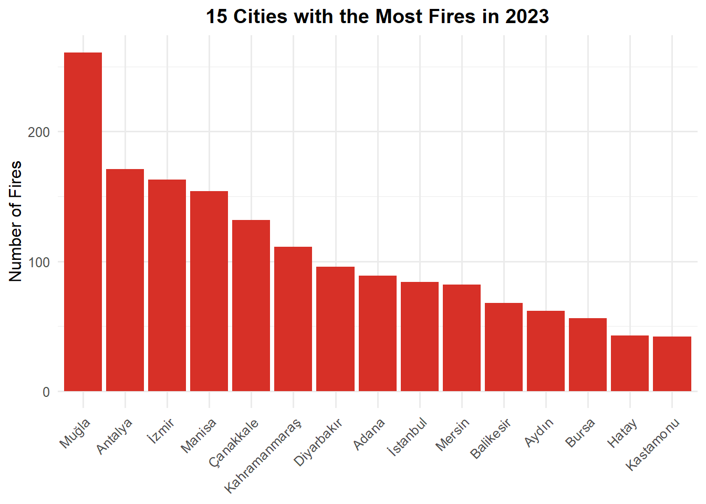
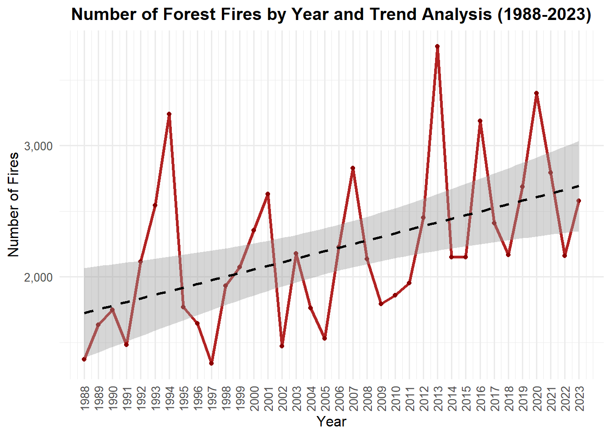
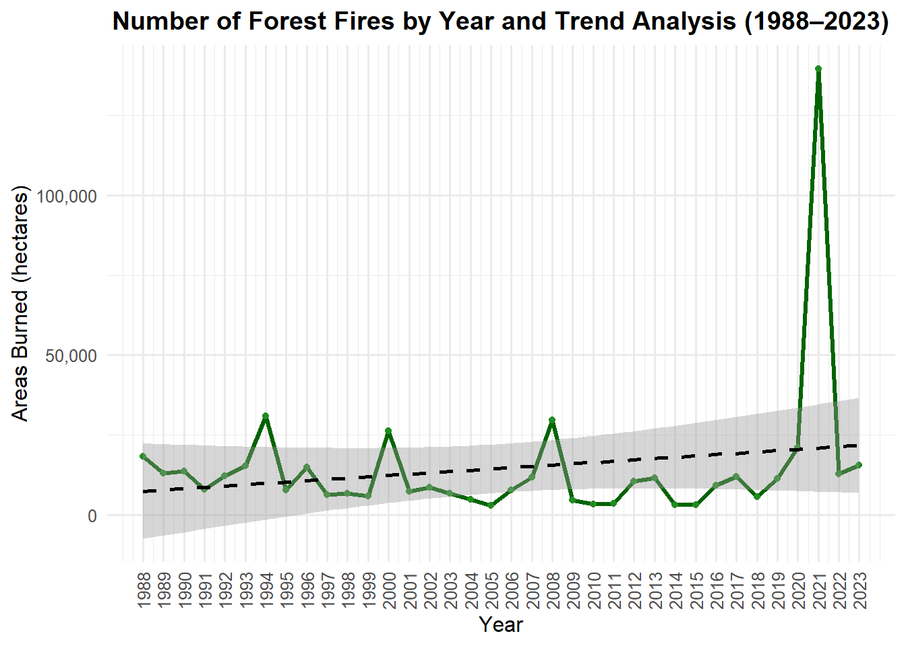
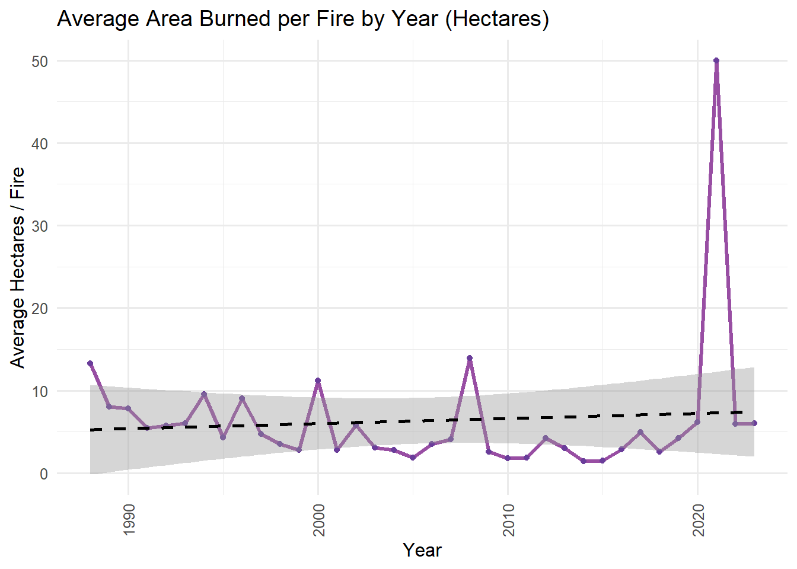
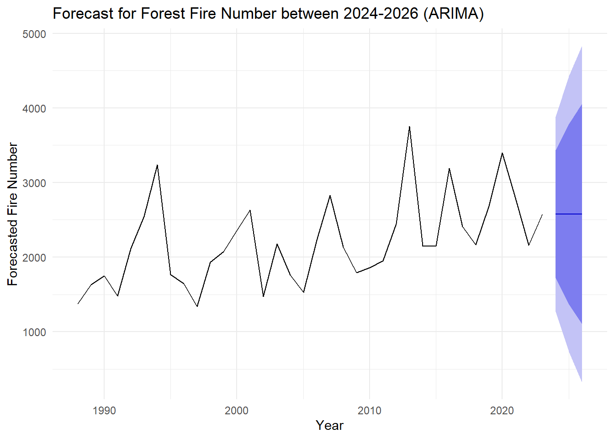

PROJECT: Analysis of Forest Fires in Turkey (1988-2023)
Authors
Ece Zeynep Aktaş
İrem Çatalkaya
Please follow this page for updates.
1 Abstract
The problem we have chose to inspect is investigating causes of forest fires occurred in Turkey and creating actionable insights to prevent them. The reason we have chose to study this particular problem is; data being official source that offers us years of multi-faceted content to explore and is suitable to working with the R programming language. The structure of data consists of distribution of forest fires across counties, the categorization of their causes, and the silvicultural practices employed for forest management and establishment. The data we have studied on is taken from Orman Genel Müdürlüğü official website.
2 Access to Data
You can access the relevant .RData file from the link:
The following steps were taken when transferring data to the R environment:
Editing File Names: Since Turkish characters (ç, ğ, ü, ö, ş, ı) in file names in Turkish can cause errors, the Turkish characters in the file names were converted to English characters. For example: “b?lge_mudurluklerine_sayisal_olarak_2004_2023.xlsx” file was changed to “bolge_mudurluklerine_sayisal_olarak_2004_2023.xlsx”.
Data Cleaning: Irrelevant explanations, visuals and empty lines in the Excel files is deleted to make datasets easily readable and processable.
Editing Column Names: Turkish characters in the column names are replaced with English characters (such as Sehir instead of City, Bolge instead of Region). Column names are replaced with more descriptive ones. For example: Main categories of negligence, accident, and intent got more detailed according to the causes of fire and got named as: ihmal_copluk, ihmal_avcilik, kaza_trafik, kaza_energy, kaza_yangin, kaza_aniz
Editing the Data Structure: Data in the same category were brought together.
Data Import: Data was imported from the xlsx package with the read.xlsx() function (encoding = "UTF-8" was used).
Code
library(readxl)library(tidyr)library(dplyr)library(ggplot2)library(scales)df <- orman_yanginlaridf$yil <-suppressWarnings(as.numeric(df$yil))df$adet <-suppressWarnings(as.numeric(gsub("[^0-9.]", "", df$adet)))df$hektar <-suppressWarnings(as.numeric(gsub("[^0-9.]", "", df$hektar)))df <- df |>filter(!is.na(yil), !is.na(adet), !is.na(hektar))# Grafik 1: print(ggplot(df, aes(x = yil, y = adet)) +geom_line(linewidth =1.2, color ="firebrick") +geom_point(color ="darkred") +scale_x_continuous(breaks =seq(min(df$yil), max(df$yil), by =1)) +labs(title ="Number of Forest Fires by Year",x ="Year", y ="Number of Fires") +theme_minimal() +theme(axis.text.x =element_text(angle =90, vjust =0.5)))
Code
# Grafik 2: print(ggplot(df, aes(x = yil, y = hektar)) +geom_line(linewidth =1.2, color ="darkgreen") +geom_point(color ="forestgreen") +scale_x_continuous(breaks =seq(min(df$yil), max(df$yil), by =1)) +scale_y_continuous(labels =label_comma()) +labs(title ="Burned Area by Year (Hectares)",x ="Year", y ="Area") +theme_minimal() +theme(axis.text.x =element_text(angle =90, vjust =0.5)))

Code
# Grafik 3:neden_df <- df |>select(yil, kasit_adet, ihmal_kaza_adet, dogal_adet, `sebebi_bilinmeyen_ adet`) |>mutate(across(-yil, ~suppressWarnings(as.numeric(gsub("[^0-9.]", "", .))))) |>pivot_longer(cols =-yil, names_to ="Cause", values_to ="adet") |>filter(!is.na(adet))print(ggplot(neden_df, aes(x = yil, y = adet, color = Cause)) +geom_line(linewidth =1.1) +scale_x_continuous(breaks =seq(min(neden_df$yil), max(neden_df$yil), by =1)) +labs(title ="Annual Distribution by Fire Causes",x ="Year", y ="Number of Fires") +theme_minimal() +theme(axis.text.x =element_text(angle =90, vjust =0.5)))

Code
library(readxl)library(dplyr)library(tidyr)library(ggplot2)library(scales)# Veriyi okudf <- orman_yanginlari |>mutate(yil =as.numeric(yil),kasit_adet =as.numeric(gsub("[^0-9.]", "", kasit_adet)),ihmal_kaza_adet =as.numeric(gsub("[^0-9.]", "", ihmal_kaza_adet)),dogal_adet =as.numeric(gsub("[^0-9.]", "", dogal_adet)),sebebi_bilinmeyen_adet =as.numeric(gsub("[^0-9.]", "", `sebebi_bilinmeyen_ adet`)) ) |>select(yil, kasit_adet, ihmal_kaza_adet, dogal_adet, sebebi_bilinmeyen_adet)neden_df <- df |>pivot_longer(cols =-yil, names_to ="cause", values_to ="number") |>filter(!is.na(number))# Grafikggplot(neden_df, aes(x = yil, y = number, fill = cause)) +geom_area(alpha =0.8) +labs(title =" Distribution of Fire Causes Between 1988-2023 (Stacked Area Chart)",x ="Year",y ="Number of Fires",fill ="Cause of Fire" ) +theme_minimal(base_size =12) +theme(axis.text.x =element_text(angle =90, vjust =0.5),plot.title =element_text(face ="bold", hjust =0.5) ) +scale_y_continuous(labels =label_comma()) +scale_x_continuous(breaks =seq(min(neden_df$yil), max(neden_df$yil), by =1))
Code
library(readxl)library(dplyr)library(ggplot2)library(scales)# Veriyi okuiller <- (iller_2023)iller <- iller |>filter(sehir !="Türkiye") |>mutate(adet =as.numeric(gsub(",", ".", adet)),hektar =as.numeric(gsub(",", ".", hektar)) ) |>filter(adet >0, hektar >0) |>mutate(orani = hektar / adet)# Grafik 1: En Çok Yangın Çıkan İlk 15 İlprint( iller |>arrange(desc(adet)) |>slice_head(n =15) |>ggplot(aes(x =reorder(sehir, -adet), y = adet)) +geom_bar(stat ="identity", fill ="#d73027") +labs(title ="15 Cities with the Most Fires in 2023",x =NULL, y ="Number of Fires") +theme_minimal(base_size =12) +theme(axis.text.x =element_text(angle =45, hjust =1),plot.title =element_text(face ="bold", hjust =0.5) ) +scale_y_continuous(labels =label_comma(accuracy =1)))

Code
# Grafik 2: En Fazla Alan Yanan İlk 15 İlprint( iller |>arrange(desc(hektar)) |>slice_head(n =15) |>ggplot(aes(x =reorder(sehir, -hektar), y = hektar)) +geom_bar(stat ="identity", fill ="#1a9850") +labs(title ="The Top 15 Cities with the Most Area Burned in 2023",x =NULL, y ="Area Burned (Hectares)") +theme_minimal(base_size =12) +theme(axis.text.x =element_text(angle =45, hjust =1),plot.title =element_text(face ="bold", hjust =0.5) ) +scale_y_continuous(labels =label_comma(accuracy =1)))
Code
# Grafik 3: Yangın Başına Ortalama Yanan Alan (etkililik)print( iller |>arrange(desc(orani)) |>slice_head(n =15) |>ggplot(aes(x =reorder(sehir, -orani), y = orani)) +geom_bar(stat ="identity", fill ="#4575b4") +labs(title ="Average Area Burned per Fire in 2023",x =NULL, y ="Hectares / Fires") +theme_minimal(base_size =12) +theme(axis.text.x =element_text(angle =45, hjust =1),plot.title =element_text(face ="bold", hjust =0.5) ) +scale_y_continuous(labels =label_comma(accuracy =1)))
4.1 Leaflet Map: Number of Fires and Areas by Cities in 2023
Code
library(readr)library(readxl)library(dplyr)library(leaflet)library(stringi)# Türkçe karakter düzeltme fonksiyonuduzelt <-function(x) {tolower(stri_trans_general(x, "Latin-ASCII"))}# 1. İl koordinat verisini yükle (il.csv dosyan)koord <-read_csv("C:/Users/aktas/OneDrive/yangin_verisi/il.csv") |>mutate(il_adi =duzelt(il_adi)) |>select(sehir = il_adi, lat, lon)# 2. 2023 yılı yangın verisini oku ve temizleiller <-read_excel("C:/Users/aktas/OneDrive/yangin_verisi/iller_2023.xlsx") |>filter(sehir !="Türkiye") |>mutate(sehir =duzelt(sehir),adet =as.numeric(gsub(",", ".", adet)),hektar =as.numeric(gsub(",", ".", hektar)) )# 3. Koordinatlar ile yangın verisini birleştiriller_map <-left_join(koord, iller, by ="sehir") |>filter(!is.na(lat), !is.na(hektar))# 4. Leaflet haritası oluşturleaflet(data = iller_map) |>addProviderTiles("CartoDB.Positron") |>addCircleMarkers(lng =~lon, lat =~lat,radius =~sqrt(hektar)/2,color ="darkred",stroke =FALSE,fillOpacity =0.7,popup =~paste0("<b>", toupper(sehir), "</b><br>","Number of Fires: ", adet, "<br>","Areas Burned: ", hektar, " ha" ) )
4.2 Leaflet Map: Average Area Burned per Fire by Cities in 2023
This interactive map shows the average area burned per fire (hectares / number of fires) by cities in 2023. The bigger the point, the severe the fires are.
Code
library(readr)library(readxl)library(dplyr)library(leaflet)library(stringi)# Karakter düzeltme fonksiyonuduzelt <-function(x) {tolower(stri_trans_general(x, "Latin-ASCII"))}# 1. Koordinat verisini okukoord <-read_csv("C:/Users/aktas/OneDrive/yangin_verisi/il.csv") |>mutate(sehir =duzelt(il_adi)) |>select(sehir, lat, lon)# 2. İl yangın verisini oku ve ortalama hesaplailler <-read_excel("C:/Users/aktas/OneDrive/yangin_verisi/iller_2023.xlsx") |>filter(sehir !="Türkiye") |>mutate(sehir =duzelt(sehir),adet =as.numeric(gsub(",", ".", adet)),hektar =as.numeric(gsub(",", ".", hektar)),oran = hektar / adet ) |>filter(!is.na(oran), oran >0)# 3. Birleştirveri <-left_join(koord, iller, by ="sehir") |>filter(!is.na(lat), !is.na(oran))# 4. Renk paleti oluştur (kırmızı tonları)pal <-colorNumeric(palette ="YlOrRd", domain = veri$oran)# 5. Haritayı çizleaflet(veri) |>addProviderTiles("CartoDB.Positron") |>addCircleMarkers(lng =~lon,lat =~lat,radius =~sqrt(oran)*2.5, # daha fark edilir hale gelirfillColor =~pal(oran),fillOpacity =0.8,color ="#444", weight =1,stroke =TRUE,popup =~paste0("<b>", toupper(sehir), "</b><br>","Yangın Sayısı: ", adet, "<br>","Yanan Alan: ", hektar, " ha<br>","<b>🔥 Ortalama Hektar / Yangın:</b> ", round(oran, 2) ) ) |>addLegend(pal = pal, values =~oran,title ="Average Hectares / Fires",position ="bottomright" )
Code
library(readxl)library(dplyr)library(tidyr)library(ggplot2)library(scales)vasif_df <- vasfina_2023colnames(vasif_df) <-c("bolge", "toplam_hektar", "normal_koru", "bos_kapali_koru","normal_bataklik", "bos_kapali_bataklik", "makilik","agaclandirma_sahasi", "milli_park", "orman_topragi")vasif_df <- vasif_df |>filter(bolge !="Toplam-Total")vasif_df <- vasif_df |>mutate(across(-bolge, ~as.numeric(gsub("-", NA, .))))vasif_long <- vasif_df |>pivot_longer(cols =-c(bolge, toplam_hektar),names_to ="vasif_turu",values_to ="alan") |>filter(!is.na(alan), alan >0)ggplot(vasif_long, aes(x =reorder(bolge, -toplam_hektar), y = alan, fill = vasif_turu)) +geom_bar(stat ="identity") +labs(title ="Burned Forest Area by Qualification Type and Region (2023)",x ="Regional Directorates",y ="Areas Burned (ha)",fill ="Qualification Type" ) +theme_minimal(base_size =11) +theme(axis.text.x =element_text(angle =45, hjust =1),plot.title =element_text(face ="bold", hjust =0.5) ) +scale_y_continuous(labels =label_comma())
Graph: Distribution of Post-Fire Intervention Types Across Turkey (2023)
Code
# Grafikprint(ggplot(turkiye_geneli, aes(x =reorder(mudahale_turu, toplam_alan), y = toplam_alan)) +geom_bar(stat ="identity", fill ="darkolivegreen4") +coord_flip() +labs(title ="Distribution of Post-Fire Intervention Types (2023)",x ="Intervention Type", y ="Total Area (ha)" ) +theme_minimal(base_size =11) +theme(plot.title =element_text(face ="bold", hjust =0.5)) +scale_y_continuous(labels =label_comma()))
Interpretation of the Graph: The number of forest fires shows high variability but an overall upward trend and is peaking in 2021, on the other hand burned area demonstrates even more dramatic growth, particularly in recent years. The average area burned per fire has increased substantially, suggesting fires are becoming more and more severe.
Normal forest areas (koru) suffer the most damage across regional directorates.
“Areas left for next year” and “undamaged cover areas” are the most common interventions.
We also performed a location-based analysis focusing on 2023. The top 15 cities were ranked by total fire count, area burned, and average area burned per fire. These metrics highlighted regions particularly vulnerable to fires, with some cities suffering from disproportionately large burned areas per incident. This suggests inefficiencies in early detection or fire management systems.
5 Trend Analysis
Code
library(readxl)library(dplyr)library(ggplot2)library(scales)# Veriyi oku ve temizledf <- orman_yanginlari |>mutate(yil =as.numeric(yil),adet =as.numeric(gsub("[^0-9.]", "", adet)),hektar =as.numeric(gsub("[^0-9.]", "", hektar)) ) |>filter(!is.na(yil), !is.na(adet), !is.na(hektar))# Grafik 1: ggplot(df, aes(x = yil, y = adet)) +geom_line(color ="firebrick", linewidth =1.2) +geom_point(color ="darkred") +geom_smooth(method ="lm", se =TRUE, color ="black", linetype ="dashed") +labs(title ="Number of Forest Fires by Year and Trend Analysis (1988-2023)",x ="Y?l",y ="Number of Fires" ) +theme_minimal(base_size =12) +theme(axis.text.x =element_text(angle =90, vjust =0.5),plot.title =element_text(face ="bold", hjust =0.5) ) +scale_x_continuous(breaks =seq(min(df$yil), max(df$yil), by =1)) +scale_y_continuous(labels =label_comma())

Code
#----------------------------------------------------------# Grafik 2: Yanan Alanggplot(df, aes(x = yil, y = hektar)) +geom_line(color ="darkgreen", linewidth =1.2) +geom_point(color ="forestgreen") +geom_smooth(method ="lm", se =TRUE, color ="black", linetype ="dashed") +labs(title ="Number of Forest Fires by Year and Trend Analysis (1988–2023)",x ="Year",y ="Areas Burned (hectares)" ) +theme_minimal(base_size =12) +theme(axis.text.x =element_text(angle =90, vjust =0.5),plot.title =element_text(face ="bold", hjust =0.5) ) +scale_x_continuous(breaks =seq(min(df$yil), max(df$yil), by =1)) +scale_y_continuous(labels =label_comma())

Code
library(readxl)library(dplyr)library(ggplot2)library(scales)# Veriyi oku ve hesapladf <- orman_yanginlari |>mutate(yil =as.numeric(yil),adet =as.numeric(gsub("[^0-9.]", "", adet)),hektar =as.numeric(gsub("[^0-9.]", "", hektar)),ortalama_hektar = hektar / adet ) |>filter(!is.na(yil), !is.na(ortalama_hektar), ortalama_hektar <100) # Grafikggplot(df, aes(x = yil, y = ortalama_hektar)) +geom_line(color ="#984ea3", linewidth =1.2) +geom_point(color ="#6a3d9a") +geom_smooth(method ="lm", se =TRUE, color ="black", linetype ="dashed") +labs(title ="Average Area Burned per Fire by Year (Hectares)",x ="Year",y ="Average Hectares / Fire" ) +theme_minimal(base_size =12) +theme(axis.text.x =element_text(angle =90, vjust =0.5)) +scale_y_continuous(labels =label_comma())

6 Modeling
6.1 ARIMA Time Series Analysis: Fire Number Forecast (2024-2026)
In this section, the number of forest fires for the years 2024-2026 is estimated based on historical data. Estimates are obtained with the ARIMA (Auto-Regressive Integrated Moving Average) time series model.
Code
library(readxl)library(dplyr)library(forecast)library(ggplot2)df <-orman_yanginlari |>mutate(yil =as.numeric(yil),adet =as.numeric(gsub("[^0-9.]", "", adet)) ) |>filter(!is.na(adet))adet_ts <-ts(df$adet, start =1988, frequency =1)# ARIMA modeli kur ve tahmin yapmodel <-auto.arima(adet_ts)tahmin <-forecast(model, h =3) autoplot(tahmin) +labs(title ="Forecast for Forest Fire Number between 2024-2026 (ARIMA)",x ="Year",y ="Forecasted Fire Number" ) +theme_minimal()

Interpretation of Graph:
The number of fires is estimated to be between 2100-2400 in 2024-2026.
7 Discussion
The increasing trend in fire severity can be correlated with global warming, and might warn us for more severe fires to come.
Leading human-caused fires indicate need for public awareness, this negligence might originate from people who are not familiar with the area, or with agricultural practices.
Regional differences in fire severity might suggest a non-efficient resource allocation among directorates.
Repeated and growing fires might cause loss of the ecosystem and the endemic species.
8 Results (Key Takeaways)
Prevention: Public education can be employed in high-risk regions. Monitoring should be focused during peak risk periods.
Development: Regional resource allocation can be more effective considering fire severity patterns. Early warning systems can be developed using predictive modeling and used in regional directorates.
Policy: Fires caused by negligence might be investigated and enforced in a more strict way. Directorates should be incentivized for fire-resistant land management.
9 Conclusion
This analysis reveals Turkey’s growing vulnerability to forest fires, with clear patterns in distribution by time, geographical accumulation, and human causation. The Mediterranean coastal region emerges as particularly sensitive, requiring targeted interventions. Even though natural factors play a role, human negligence remain the primary cause, suggesting significant potential for prevention through policy and education. The ARIMA model’s forecast of continued high fire frequency (2100-2400 annually) highlights the urgency for action. Future decisions should focus on reducing fire occurrence through rapid prevention and developing response capabilities to limit damage when fires occur.
The integration of geographical and time-based analysis with causal factors provides a robust foundation with evidence for forest management policies that could significantly reduce Turkey’s fire-related ecological and economic losses in coming decades.
Note: R codes were developed with ChatGPT assistance; all report texts were written by the author.